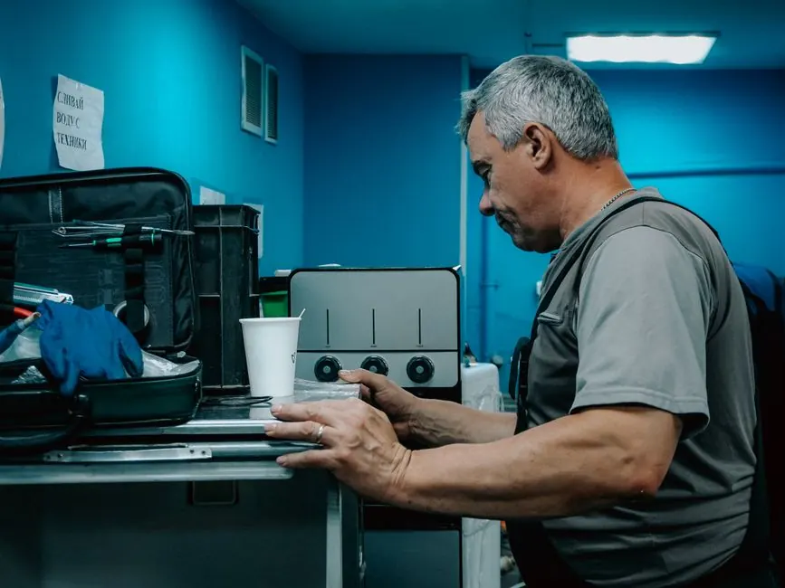
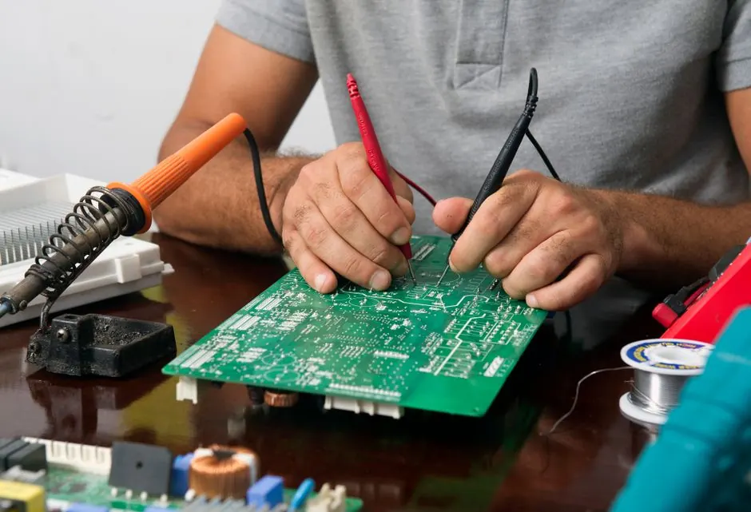

Most requested
Dryer Repair
Our Dryer Repair service addresses common issues such as dryers not heating or tumbling. Serving residents in Littleton, we ensure your dryer is back to optimal performance quickly.
Explore →Appliance Repair Services (Dryer Repair) Littleton CO are essential for keeping your dryer running efficiently. Our affordable Dryer Repair Service in Littleton ensures your appliances are in top condition, providing peace of mind and saving you money.
Upfront optionsNo work before you approve it
Respectful serviceClean floors, clear communication
Real guaranteesRepairs backed in writing
Local techniciansLicensed local professionals

Appliance Repair Services (Dryer Repair) Littleton CO is a local service dedicated to fixing and maintaining dryers for residents in Littleton since 2015. Our team is equipped to handle various dryer issues, ensuring your appliances work efficiently.
We stand out with our NATE certified technicians and quick response times throughout neighborhoods like Downtown Littleton and Littleton Village. Our affordable Dryer Repair Service in Littleton is available 24/7 for any urgent needs.
Our Appliance Repair Services (Dryer Repair) in Littleton cover all aspects of dryer maintenance and repair. We provide solutions for common issues, ensuring your appliance runs smoothly.


Installing and servicing trusted equipment
Our Appliance Repair Services (Dryer Repair) Littleton CO are designed to provide efficient and reliable solutions for your dryer issues.
Our team includes NATE certified technicians who have years of experience. We respond to service requests within 24 hours, ensuring your dryer issues are addressed promptly.
We offer competitive pricing for our services, with no hidden fees. Our affordable Dryer Repair Service in Littleton ensures that you receive quality service without breaking the bank.
As a local business, we understand the unique needs of Littleton residents. Our Appliance Repair Services (Dryer Repair) are tailored to address common issues faced by homeowners in the area.
We provide clear pricing for our Appliance Repair Services (Dryer Repair) in Littleton. There are no hidden fees, and we offer written estimates before starting any work.
Not sure? Tell us what you see →Contact us via phone or online to schedule your dryer repair service. Our team will work with you to find a convenient time.
Our certified technician will arrive on time to diagnose the issue. They'll inspect your dryer thoroughly to identify the problem.
Once the problem is identified, our technician will discuss the repair options with you. We aim to complete most repairs on the same day.

Contact us via phone or online to schedule your dryer repair service. Our team will work with you to find a convenient time.
Our Appliance Repair Services (Dryer Repair) in Littleton tackle a variety of dryer issues.
Ask a pro →We check heating elements and thermostats to restore your dryer's heating function efficiently.
Our dryer vent cleaning service eliminates lint buildup, reducing fire hazards and improving efficiency.
We inspect and replace worn parts to eliminate any noise issues, ensuring your dryer operates quietly.
“I had a great experience with Dryer Repair Littleton Pros. They fixed my dryer quickly and efficiently! Highly recommend them to anyone in Littleton.”
Avery T.Homeowner, Littleton Village
✓ Verified“The team was prompt and professional. They diagnosed the issue with my dryer in no time and had it working again the same day.”
Marcus L.Resident, Downtown Littleton
✓ Verified“I appreciate the transparency in pricing. They explained everything upfront and completed the repair quickly. Will use them again!”
Sofia K.Homeowner, South Broadway
✓ VerifiedWe proudly serve the Littleton community, including Downtown Littleton and South Broadway. Our Appliance Repair Services (Dryer Repair) are available throughout the area.
Not sure you're in range? Call with your ZIP code—we're always happy to check.
Here are answers to common questions regarding our Appliance Repair Services (Dryer Repair) in Littleton.
720 216355928 →Most jobs run between $129 and $299, depending on the specific repair needs and parts required.
The best Dryer Repair Service in Littleton is one that offers certified technicians, transparent pricing, and quick response times, like ours.
You can find affordable Appliance Repair Services (Dryer Repair) in Littleton through local providers like Dryer Repair Littleton Pros, known for their competitive pricing.
Yes, we offer 24/7 Dryer Repair Services in Littleton for emergency situations, ensuring your appliances are promptly serviced.
We fix various issues, including dryers not heating, excessive lint buildup, and mechanical failures, ensuring your appliance runs smoothly.
Contact us today for reliable and affordable dryer repair services. Our skilled technicians are ready to assist you!
Call Now →We're here to help with your dryer repair needs. Reach out to us during business hours, and we'll respond promptly.